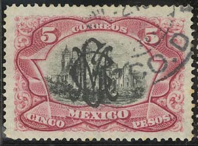

Note: on my website many of the
pictures can not be seen! They are of course present in the
catalogue;
contact me if you want to purchase it.
For stamps issued before 1899, click here.
1 c green 1 c lilac (1903) 2 c orange 2 c green (1903) 3 c brown 4 c red (1903) 5 c blue 5 c orange (1903) 10 c lilac and orange 10 c blue and orange (1903) 15 c blue and red 20 c red and blue
These stamps have a sheet watermark and perforation 14.
Value of the stamps |
|||
vc = very common c = common * = not so common ** = uncommon |
*** = very uncommon R = rare RR = very rare RRR = extremely rare |
||
| Value | Unused | Used | Remarks |
| 1 c green | * | c | |
| 1 c lilac | c | vc | |
| 2 c orange | * | * | |
| 2 c green | * | c | |
| 3 c | * | c | |
| 4 c | * | * | |
| 5 c blue | ** | c | |
| 5 c orange | * | vc | |
| 10 c lilac and orange | ** | c | |
| 10 c blue and orange | * | c | |
| 15 c | ** | * | |
| 20 c | ** | * | |
The value 15 c was overprinted with 'GOBIERNO $ CONSTITUCIONALISTA' in 1914 (RR).
Some squarish 'GCM' overprints exist on these stamps (on the 1 c lilac, 2 c green, 3 c brown, 5 c orange, 15 c blue and orange and 20 c red and blue; on the 5 c orange and the 15 c blue and orange there also exists a slightly different type of overprint) made in 1915. All these overprints are very rare on these stamps:

(Squarish 'GCM' overprint on 5 c and 20 c)
The values 5 c orange and 15 c also exist with 'G.P.DE M.' overprint in a fancy pattern. This overprint was applied in 1916. This same overprint was also applied together with the squarish 'GCM' and small fancy 'GCM' overprint on the 5 c value. All these stamps are rare (RR).
These stamps exist with overprint 'OFICIAL' to be used as official stamps, example:
Two different kinds of the 'OFFICIAL' overprint exist.

50 c lilac and black 1 P blue and black 5 P red and black
Value of the stamps |
|||
vc = very common c = common * = not so common ** = uncommon |
*** = very uncommon R = rare RR = very rare RRR = extremely rare |
||
| Value | Unused | Used | Remarks |
| 50 c | *** | ** | |
| 1 P | *** | ** | |
| 5 P | RR | R | |
These stamps exist with two different kinds of 'OFICIAL' overprint (issued 1900 and 1910). The 5 P exists with 'G.P.DE M' and 'OFICIAL' overprint (RRR).
I have seen the 50 c and 5 P values with a squarish 'GCM' overprint (this could be bogus):

For stamps of Mexico, issued after 1899, click here.